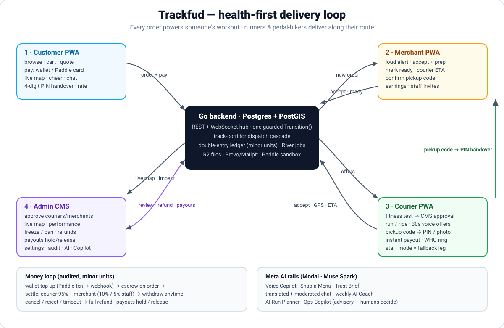

Health-first food delivery: customers order, runners & pedal-bikers deliver along their workout, merchants cook. Tap any step for the why behind it. No logins, no backend calls — this page is a guided tour.

The loop in 8 steps
One order, end to end. Tap a step to expand it.
Customer orders & paysQuote shows food + delivery fee + 3% service fee and the honest 30–60 min promise before payment. Wallet pays instantly; cards go through a server-created Paddle transaction so the overlay never handles an ad-hoc amount.
Merchant accepts & cooksLoud alert + push. Accept with a prep time, or reject for an automatic full refund. A 3-minute accept timeout protects the customer from a silent kitchen.
Dispatch searches runners & bikersPostGIS finds approved, non-busy couriers with a fresh GPS fix whose track corridor covers the restaurant (400 m runner / 800 m biker). Scoring blends detour, workout-goal fit and idle time. Declining never penalises.
Courier accepts — exactly oneThe claim is an atomic UPDATE … WHERE courier_id IS NULL: one order, one courier, no double-accept. Everyone else's card clears instantly via an offer.taken frame.
Food-ready waveKitchens cook ~15 min but the accept-time search lives ~4 min, so tapping “Ready” restarts a fresh courier wave — the primary path offers actually arrive on.
Pickup & handoverTwo codes, two pairs: the merchant shows a pickup code to the courier; the customer says their 4-digit PIN face-to-face to the courier (photo also works). Codes never travel in chat.
Settle & celebrateEscrow releases at handover: courier keeps 95% of the fee + 100% of tips, merchant nets 90% (5% on staff legs). Customer gets the impact card — “You powered 2.4 km of Rina's run.”
Fallbacks keep promises honestNo runner/biker in 4 min → on-shift merchant staff (3 min) → customer chooses: wait 5 more, switch to pickup, or full refund. Support refunds cover pre-pickup cases; delivered orders go through finance.
Customer flow
placedacceptedreadypicked_updeliveredcompleted
Set delivery pointGPS, address search, draggable pin + note. The header always shows the live “Delivering to …” point.
Pick a restaurantSorted by distance with a real availability badge — “runners & bikers nearby” only renders while an approved courier is actually online near that kitchen, otherwise “staff only”.
Build the cartOnly travels-well items can be delivered; the rest show as pickup-only. Menus are trilingual (en/id/ms) with a show-original toggle.
PayWallet (instant, held in escrow) or Paddle card checkout. IDR top-ups convert to a USD charge at the daily rate while the wallet is credited the full IDR.
Track liveCourier dot moves on WebSocket frames with poll fallback, route + ETA, courier profile, cheer button (read aloud to the runner), and auto-translated chat.
Hand over & rateSay the PIN face-to-face. Then rate courier and restaurant separately, and keep the impact history of every workout you powered.
Courier flow (runner / pedal-biker)
drafttestingpending_reviewapprovedfrozen / banned
Onboard onceSign up → pre-run checklist (GPS, Wake Lock, mic, notifications) → fitness test (runner 2 km/15 min, biker 5 km/20 min, moving time) → documents + consents → submit.
Pass reviewAn AI Trust Brief checks the test for cheating and reads the ID/bike photos; a human admin approves or rejects. Status locks while under review.
Go online with a goalStart a work session with a workout goal (“easy 5 km”). The goal feeds dispatch matching — offers fit the run, not the other way round.
Take offers hands-free30-second cards with sound, vibration and voice; Voice Copilot accepts (“yes”), reports distance, or pings the customer — all while running.
Deliver & earnHead-now nudge timed to food-ready → pickup code → route → PIN/photo → instant wallet credit. End the run to the “Earned & moved” summary.
Stay healthyWHO 150-min ring, streaks, personal bests, daily cap + rest-day nudges, weekly AI Coach, AI Run Planner loops past busy kitchens, GPX export.
Merchant flow
pendingapprovedbusy / pausedbanned
Set up the storeBusiness profile, map pin (lat/lng + pickup note), hours in the store timezone, prep time.
Snap-a-MenuPhotograph the paper menu; AI returns multilingual items with size class and travels-well labels that dispatch actually enforces. Confirm prices before publishing.
Sign the agreementVersioned e-sign including the staff-fallback clause (5% commission on staff legs vs 10%). Re-sign on every new version.
Work the kitchen queueAccept + prep time → courier ETA → Ready → confirm the courier's pickup code. Reject refunds the customer automatically.
Grow & get paidInvite staff by email, toggle on-shift/can-deliver, track weekly earnings with exact commission math, pause or busy-mode the store any time.
Admin (CMS) flow
Triage the queuesCourier and merchant applications with Trust Briefs, evidence photos, agreement text + hash. Approve or reject with a required reason; every decision emails + pushes.
Watch it liveDashboard: today's counts, live courier dots, active orders. Courier performance pages show 30-day acceptance/completion/in-window rates, WHO trends, overexertion guards and peer rank.
Keep it safeFreeze (temporary, can't go online) / unfreeze / ban with reason + end date. Every action lands in the sanctions table and the unified audit log.
Fix money casesOrders list + detail (audit timeline, chat, proof photo, journal money trail) with support refunds for pre-pickup orders; withdrawals monitor with hold/release.
Tune the platform28 settings (tests, dispatch corridors, fees) with global + per-country scopes, no restart. AI-usage page and the Ops Copilot answer plain-words questions from read-only tools.
Money & AI rails
Money (integer minor units, double-entry)
Step
What happens
Evidence
Top-up / card pay
Server mints a Paddle transaction; webhook (HMAC, deduped, idempotent) credits the wallet or confirms the order
Paddle sandbox; demo simulate-paid
Escrow
Order value moves wallet → escrow on placement; card legs hold on webhook confirm
ChargePostings
Settle
At handover: courier 95% + tips, merchant 90% (95% on staff legs), platform fee + service fee
refundLegsFor reverses
Withdraw
Couriers withdraw anytime; CMS holds/releases suspicious payouts with audit-logged reasons
mock payout in demo
Meta AI — inside the flow, never a side chatbot
Feature
Where it helps
Honesty rule
Voice Copilot
Hands-free accept / status while running
Server re-checks every voice confirmation
Snap-a-Menu
Photo → multilingual menu + dispatch labels
Merchant confirms prices before publish
Trust Brief
Test cheat-check + ID/bike photo read
Advisory only — admin decides
Translated chat + moderation
Courier ↔ customer thread
Flags, never silent blocks
AI Coach / Run Planner / Copilot
Weekly report, workout loops, ops Q&A
Estimates labelled; humans decide
Chat/text AI routes to the Modal-hosted Muse Spark endpoint (Bearer id.secret over a /v1 base); without keys every surface falls back to deterministic offline behaviour and says so.